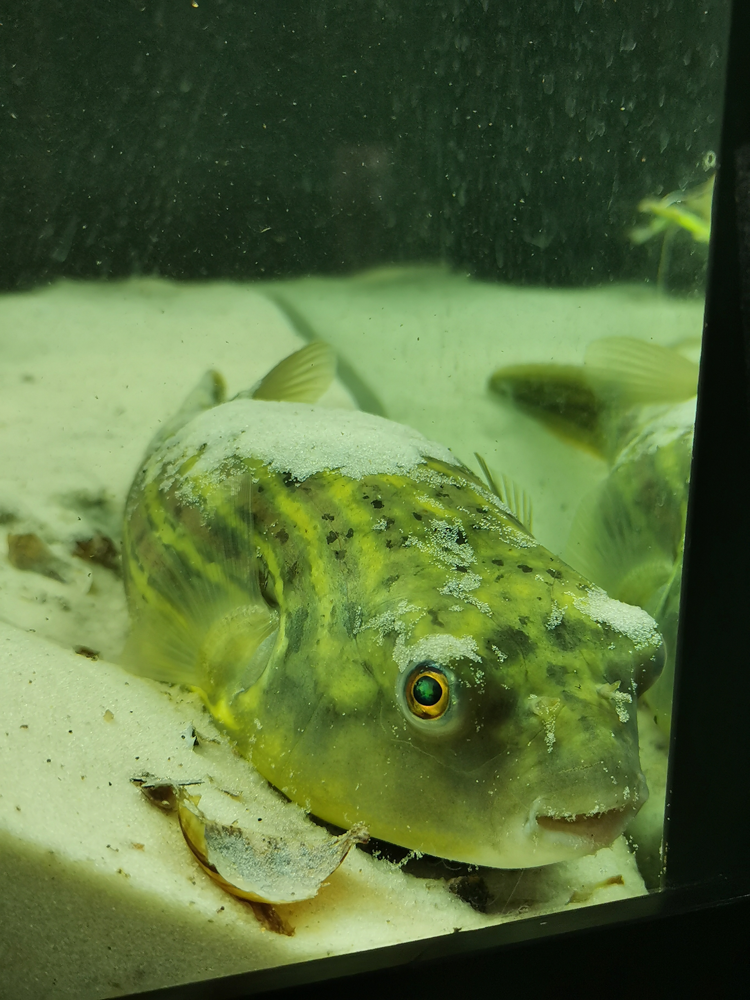

Welcome to my website about my pet Puffer fish.
Puffer Fish are one of the most exotic and dangerous pets to keep in the world. My Puffer fish was caught as a
baby at 1cm in length in the Nile River in Egypt and flown via airplane to New Zealand! Today we will explore a
little bit more about this weird fish.
Interesting facts!
- Nile river puffers are also known as the Fahaka Puffer.
- They can live in partly salted or fresh water.
- The Fahaka Puffer has a beak instead of teeth to bite through shells and snails.
- He may reach up to 1.4 Feet in length!
Safety Concerns!
Looking after a Fahaka puffer poses several risks for the owner including:
- Agression! The Fahaka puffer is one of the most aggressive fish kept by hobbyists.
- Toxins! The Fahaka puffer can contain enough poison to kill 40 Adult Humans.
- Biting! A Fully grown Fahaka puffer can bite through a human finger.
Bonus Picture of my pet after throwing sand everywhere:

It's not over yet! Follow the link below for bonus footage!
*Click Me!*